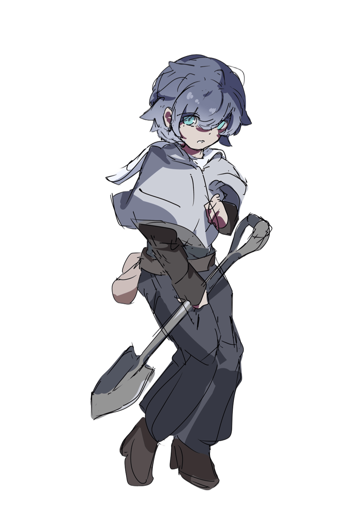

性格
常に小さい声で、敬語で喋る。人見知りであるため、知らない人間とはほとんど会話を交わさず、どうしても必要な時だけは筆談でのコミュニケーションを試みる。対人関係に関する強いトラウマがあるらしいが、多くは語られない。普段は自然の中で一人きりで過ごしている。
仕事について
陽の差さない暗黒中華街においてはいわゆる普通の「植物」は育たない。けれども滲緑街によって特殊に作られた薬草の類などは生育条件を満たす。それらを適切に管理し、各街へと輸送するのが彼の仕事である。もちろん各種の植物は教団内においても様々な用途に利用されている。
過去
蒼殉街の外れで死にかけの状態で倒れているところをレイによって発見され、拾われた。拾われた当初は失語症を発症しており、まともな意思疎通は不可能であった。それでもレイを中心とした人間たちとの数年にわたる交流の中で、現在の状態まで回復した。
拾われたのちは、体力がないなりに自身の命の恩人である教団に尽くしている。教団の教義内容にさほど興味はない。大切なのは、この空間だけが彼が生きられる唯一の場所であるということである。
能力
マメで丁寧な仕事ぶりは、繊細な世話を必要とする農作業に向いている。その代わりに体力がほとんどなく、少しでも無理をすると数日間寝込む羽目になる。